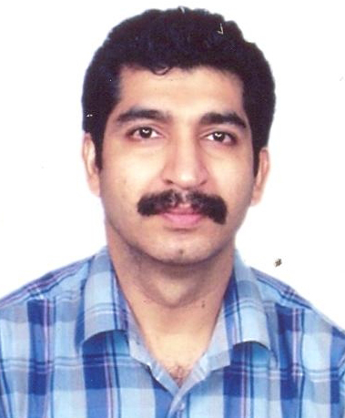

Panel Discussion on Falling Rupee and its Impact on the Indian Economy
Ashish Chauhan

Ashish is the MD & CEO of the Bombay Stock Exchange Ltd.. He serves on the Board of ICCL, CDSL, BOISL, BSE Training Institute, BFSI Sector Skill Council and Marketplace Technologies Limited. He is also a member of the Board of Governors of IIIT D&M, Jabalpur and a few SEBI committees. He currently is the Chairman of the Advisory Committee on Technology of FMC, member of several SEBI committees and has served on various other government and regulatory committees, CBDT and FMC, among others in the past. He is also a member of the Advisory Board of Lend a Hand India, a NGO working in implementing vocational skill development programs for rural and urban youth by providing them practical training at high school level. He has recently been a recipient of the Zee Business award for business transformation. Ashish holds a B.Tech in Mechanical Engineering from IIT Bombay and PGDM from IIM Calcutta.
Dr. Vinish Kathuria

Dr. Vinish Kathuria is an Associate Professor at Shailesh J. Mehta School of Management. His teaching and research activities relate to economics mainly in the fields of Industrial Economics and economics of Industrial and Urban pollution. Before joining SJM SOM, he was on Fulbright Senior Researcher fellowship to University of Colorado, Boulder (US). He has several publications in international journals including Oxford Economic Papers, Ecological Economics, Applied Economics, Journal of International Development, Transportation Research, Technological Forecasting and Social Change among others. He has pursued his post-doc from University of Gothenburg, Sweden in the area of Environmental Economics and Ph.D. internship from United Nations University / Institute for New Technologies (UNU/INTECH), Maastricht, The Netherlands. His thesis was short-listed by UNESCO for its Management of Social Transformation (MOST) award in the year 2000-01.
Prof Aliasgar Q Contractor

Professor Aliasgar Q Contractor is currently Professor of Chemistry and Institute Chair Professor. He was previously the Dean for Alumni and Corporate Relations and also Head, Department of Chemistry at Indian Institute of Technology Bombay. He was also the head of Sophisticated Analytical Instrument Facility from 1999-2005. An alumnus of IIT Bombay, he completed his MSc in 1973 and PhD in 1978. He has moderated many Panel discussions because of his excellent oratory skills